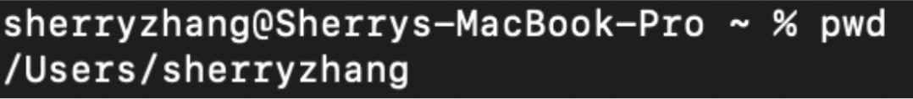
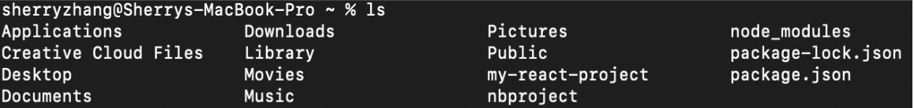
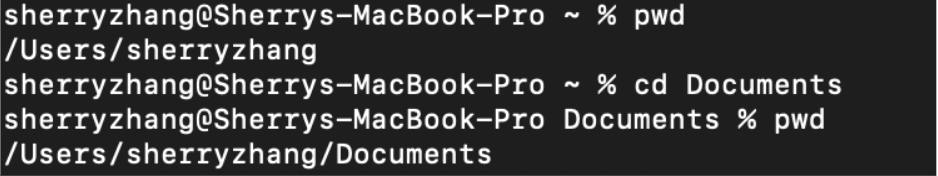
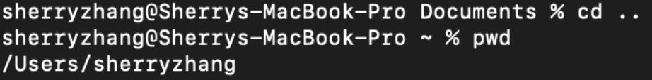
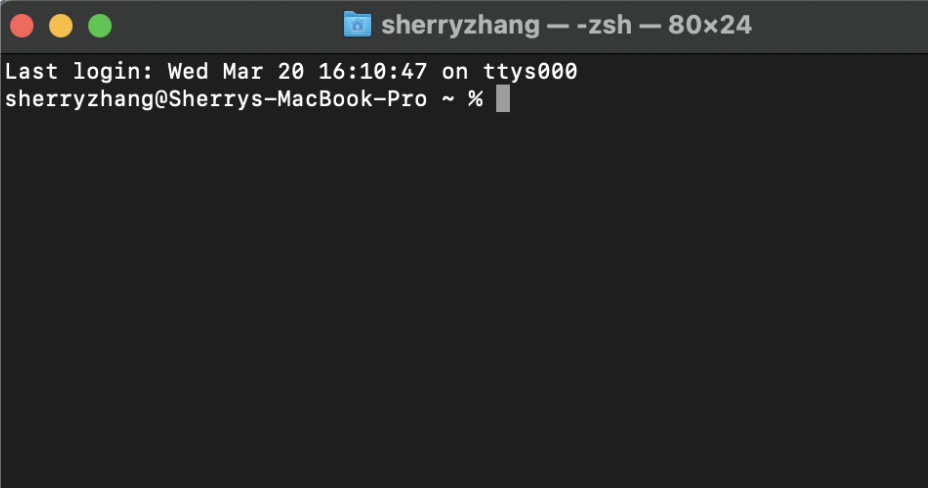
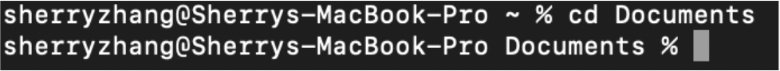
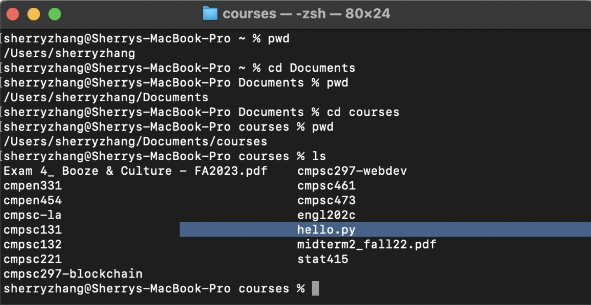
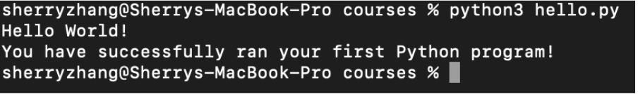
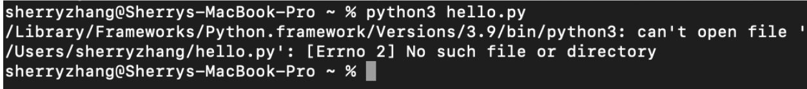

Instruction Set
How to Use the Terminal to Run a Python File (MacOS)
This instruction manual teaches users how to run their Python files in the MacOS terminal by covering basic terminal commands, directory navigation, and Python commands for executing programs. Knowing how to run a Python file in the terminal is important because it provides users with direct control over the script’s execution and helps with debugging.
NOTE: These instructions are for computer science beginners with a MacOS device, which uses the Unix-based operating system. Furthermore, it is expected
that the user already has Visual Studio Code and Python installed and updated to the latest version.
Materials
Terminal Basics
Every computer has a file system, which governs, manages, and organizes the computer’s files and directories (also known as folders). The file system can be represented as a hierarchy, as shown in Figure 1.1 It starts at the root, which is the top directory of the hierarchical file tree. Users can move up and down the hierarchical tree to find desired files or directories. Each file and directory will also have its path, which is the specific location or route used to uniquely identify where the file or directory is in the file system.
Figure 1: Hierarchal structure of the file system
On MacOS, files and directories can be accessed through Finder or a variety of Unix commands via Terminal. To be brief, Finder uses a graphical user interface (GUI) that represents the file system with icons, windows, and menus, making it easy for those with no computer background to use. Meanwhile, Terminal uses a command line interface (CLI), which is a text-based interface used for interacting with the computer, running programs, and managing files.
For this instruction set, Terminal will be used to run a Python program. Users need to familiarize themselves with the following three Unix commands before proceeding.
pwd prints the full name (path) of the current directory that is used at the
moment. To note, the current directory, which is also the last directory in the path, is listed before the % symbol. pwd, the terminal prints the path /Users/sherryzhang, where sherryzhang is the current directory.
sherryzhang is equivalent to ~, which represents the home directory of the user, hence why ~ is displayed instead of
sherryzhang. Your ~ will have a different name—your username.
ls displays all files and directories under the user’s current directory. To show hidden files too, type
ls -a instead.ls, the terminal displays all the files and folders (Applications, Downloads, Documents, etc.) under the current directory ~
(also known as sherryzhang).
cd is used to move to another directory. To use the command, the user should first type cd, followed by
the name of the directory they want to navigate to.cd name_of_directory, where name_of_directory is the next directory• To return to the previous directory:
cd ..NOTE: If you get the error cd: no such file or directory, it means the directory you are trying to navigate to does not exist under your current directory.
The current directory is
sherryzhang. The desired directory is Documents. After entering cd Documents, the new path is
Users/sherryzhang/Documents, meaning the current directory is now Documents. A change in path indicates a successful directory change.
cd .. is being used to return to the sherryzhang directory from Documents.
With the three commands discussed above, one will be able to easily navigate the terminal to find desired files and directories.
Navigating to the Correct Directory
Before running the Python file, it is necessary to ensure that you are in the correct directory. Using the three commands covered above (pwd, ls, and cd), you will need to navigate to the directory where the Python file is located.
-
Determine the path by figuring out which folder the Python file is in.
Which directory did you create and store your Python file in? If you are using Visual Studio Code, the path should be displayed at the top of the text editor. You can
also go to Finder and check which folder the file is under. In this case, my path is
Users/sherryzhang/Documents/courses/hello.py, andhello.pyis under the directory courses, which is my target directory.

-
Open your Terminal.
If you cannot find Terminal, search for it under Spotlight Search (click the magnifying glass icon on the top right of your screen). Upon opening Terminal, a black box
should appear with an area to write text.

-
Type pwd to locate the current directory.
This will help you understand where your starting point is. In my case, I am starting in the
sherryzhangdirectory.
-
Type ls to see which files and directories are under the current directory.
By listing all the directories and files under the current directory, you can see if you are on the right path. The
sherryzhangdirectory has 13 folders and 2 files. The next directory in the path I am looking for isDocuments, which is indeed undersherryzhang.
-
Use the cd command to navigate to the next directory in the path.
The next directory follows right after the current directory in the path. Type
cdwith the name of the folder followed after to change directories. In the example below, I changed my directory toDocumentssince it is the directory that follows aftersherryzhangin the path. If you navigated to the wrong directory, typecd ..to return to the previous directory.

-
Repeat Step 5 until you reach the directory containing the Python file.
For additional help, use Step 3 to check if you are on the correct path, and use Step 4 to see if the next directory exists. In the example below, I use
pwdto see where I am on the path. Then, I usecdto change to the next directory in the path. I repeat those steps until I am in the directory where my Python file is located. In this case, my Python filehello.py(highlighted in blue) is located under thecoursesdirectory, which I successfully located.

Running the Python File
Now that the terminal is in the correct directory, the Python file can be run. The command for running the Python file is python3 name_of_file.py,
where name_of_file is the name of the Python file. The .py indicates that the file is a Python file.
Here, the file I want to run is hello.py, where hello is the name of the file. Upon entering the command, the terminal runs the Python script and outputs the result.
In hello.py, the Python program prints “Hello World!” and lets the user know that the program has successfully run.

Troubleshooting
If you run the Python file and see the error message [Errno 2] No such file or directory, it means that you are in the wrong directory. In other
words, the Python file cannot be found under the current directory that you are in. To fix the issue, refer back to the section “Navigating to the Correct Directory” to find the
right directory.

Summary
From this manual, you have acquired the knowledge and skills needed to run a Python file using the macOS terminal. Knowing how to navigate the command line is vital as it allows
users to perform complex tasks faster and provides a range of tools and utilities that may not be available to access through GUIs.
In this tutorial, you learned how to:
• Use basic Unix commands like pwd, ls, and cd
• Navigate through the file hierarchy tree to find the correct directory
• Run Python files and programs in the terminal